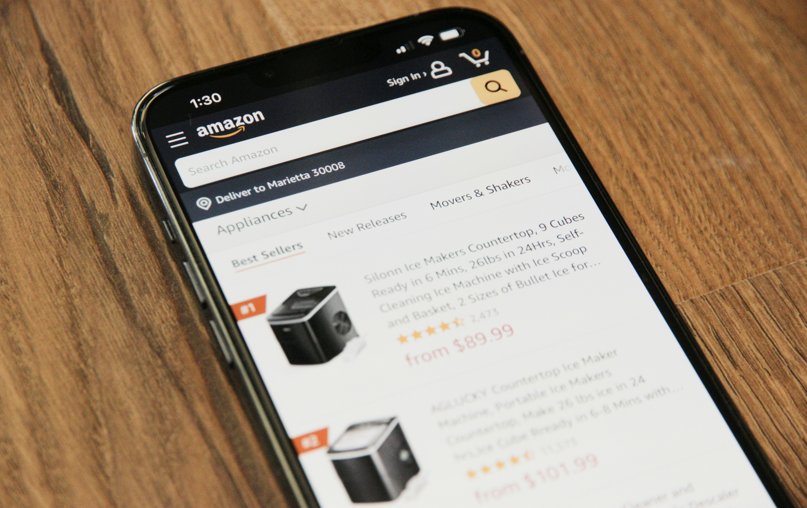

E-COMMERCE APPLICATION (INSPIRED BY FLIPCART)
Project Overview : This is a Flipkart clone developed using the MERN stack (MongoDB, Express.js, React, and Node.js). This project replicates key features of Flipkart, a leading e-commerce platform, showcasing proficiency in full-stack web development and understanding of complex, real-world applications.
Key Features : Implemented user registration Product Management: Created a comprehensive product catalog with features to add and view products. Implemented product categorization and search functionality for efficient navigation. Shopping Cart: Order Processing: Built an order management system for users to place and review orders. Admin Dashboard: Created an admin panel for managing products, orders, and users. Implemented role-based access control to secure admin functionalities. DEPLOYED FRONTEND ON NETLIFY AND BACKEND ON RENDER
Technical Stack : Frontend: Developed using React.js with Redux for state management, providing a intuitive user interface. Backend: Built with Node.js and Express.js, establishing a robust RESTful API to handle client requests and interact with the database. Database: Used MongoDB for its scalability and flexibility in managing large datasets, especially suitable for e-commerce platforms. Optimized Performance: Utilized lazy loading and code splitting to enhance application performance and reduce initial load times. Scalability: Designed the backend with scalability in mind, allowing easy expansion to support a growing number of users and products. Testing: Implemented unit and integration tests using Jest and Mocha to ensure code reliability and robustness. Challenges and Solutions Handling Large Data: Managed performance issues related to large datasets by implementing efficient querying and indexing strategies in MongoDB.

FOOD-ORDER APPLICATION
Project Overview : This Food Order Application is a comprehensive web application developed using the MERN stack (MongoDB, Express.js, React, and Node.js). This project emulates a modern food ordering system, allowing users to browse menus, place orders demonstrating expertise in full-stack development and real-time application management.
Key Features User Authentication: Implemented secure user registration and login using JWT (JSON Web Tokens) for authentication and authorization. Passwords are hashed using bcrypt to ensure data security. Restaurant and Menu Management: Developed a dynamic system for adding, updating, and managing restaurant menus. Implemented a searchable and filterable menu, allowing users to easily find their desired dishes. Order Placement and Tracking: Enabled users to place orders, customize their dishes Cart Management: Designed a user-friendly cart system where users can add, remove, and update items. Included features like order summary and total cost calculation. x Admin Dashboard: Created an admin interface for managing restaurants, menus, orders, and users. DEPLOYED FRONTEND ON NETLIFY AND BACKEND ON RENDER
Technical Stack : Frontend: Developed using React.js with CONTEXT API for state management, providing intuitive user interface. Backend: Built with Node.js and Express.js, establishing a robust RESTful API to handle client requests and interact with the database. Database: Used MongoDB for its scalability and flexibility in managing large datasets, especially suitable for e-commerce platforms. Authentication: Implemented with JWT for secure and scalable user session management.

AMAZON CLONE
Overview : Amazon Clone is a front-end web project designed to replicate the user interface of Amazon, a global e-commerce leader. This project focuses on using HTML and CSS to create a visually appealing and responsive design, showcasing proficiency in web design and front-end development.
Home Page: Developed a detailed home page with a navigation bar, search bar, and multiple product categories. Implemented featured products and promotional banners to mimic Amazon's layout. Product Listings: Created product listing pages that display products in a grid format. Included product images, titles, prices, and ratings to provide comprehensive product information. Responsive Design: Ensured the website is fully responsive, adapting to various screen sizes from desktops to mobile devices. Used CSS media queries to adjust layouts and styles for different devices.
HTML5: Utilized semantic HTML5 elements to structure the content, ensuring accessibility and SEO friendliness. Organized the code with clear and logical division of sections, such as header, main content, and footer. CSS3: Used modern CSS techniques, including Flexbox and Grid, to create a flexible and efficient layout. Applied CSS transitions and animations for a smooth user interaction experience. Implemented custom CSS styles to match Amazon's branding and design language.

TO-DO APP
Overview : The To-Do App is a simple, intuitive application designed to help users manage their daily tasks effectively. Built using HTML, CSS, and JavaScript, this app provides a user-friendly interface for adding, deleting, and marking tasks as complete.
Features : Add Tasks: Users can easily add new tasks to their to-do list. Delete Tasks: Tasks can be removed with a single click. Mark as Complete: Users can mark tasks as completed, which visually distinguishes them from pending tasks. Responsive Design: The app is fully responsive and works seamlessly on both desktop and mobile devices.
Technologies Used : HTML: Structuring the application’s content. CSS: Styling the application to enhance the user experience. JavaScript: Implementing functionality such as adding, deleting, and marking tasks. Code Highlights Dynamic Task Management: JavaScript functions handle task operations dynamically without needing to reload the page. Local Storage: Utilizes local storage to save tasks, ensuring that the to-do list persists even after the browser is closed.

Quiz Game Application
Overview : The Quiz App is an interactive web application designed to test users' knowledge on various topics through multiple-choice questions. This project showcases front-end development skills using HTML, CSS, and JavaScript, highlighting the ability to create dynamic and engaging user interfaces.